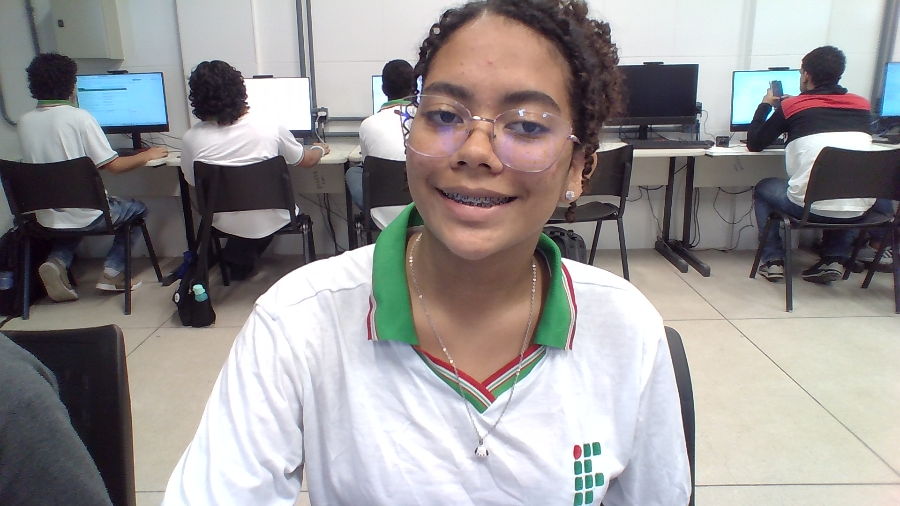

Eu gosto muito de assistir filmes e séries, pode ser ação, comédia, drama, romance, não gosto de terror então evito.
Eu também costumo ouvir muita música, amo ouvir louvores e gospel, já músicas seculares eu prefiro internacional e algumas brasileiras. Não gosto de ficar parada então sempre vou estar procurando algo pra fazer, também valorizo tempo de qualidade, como por exemplo: passar tempo com amigos, ler, praticar algo ou às vezes estudar..